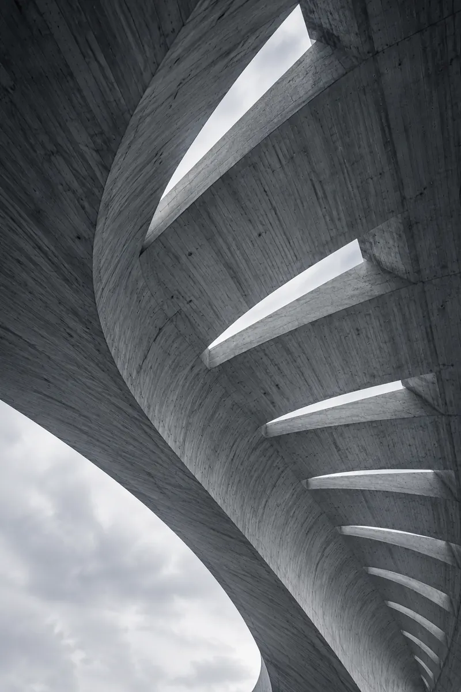
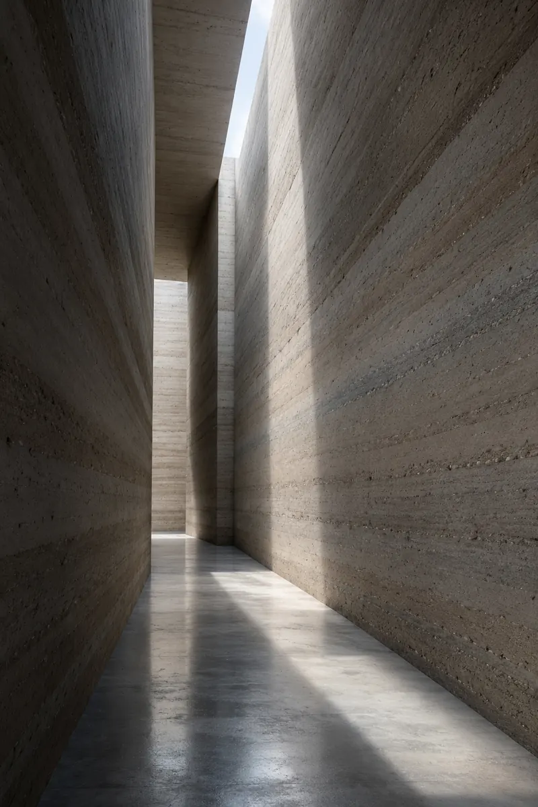
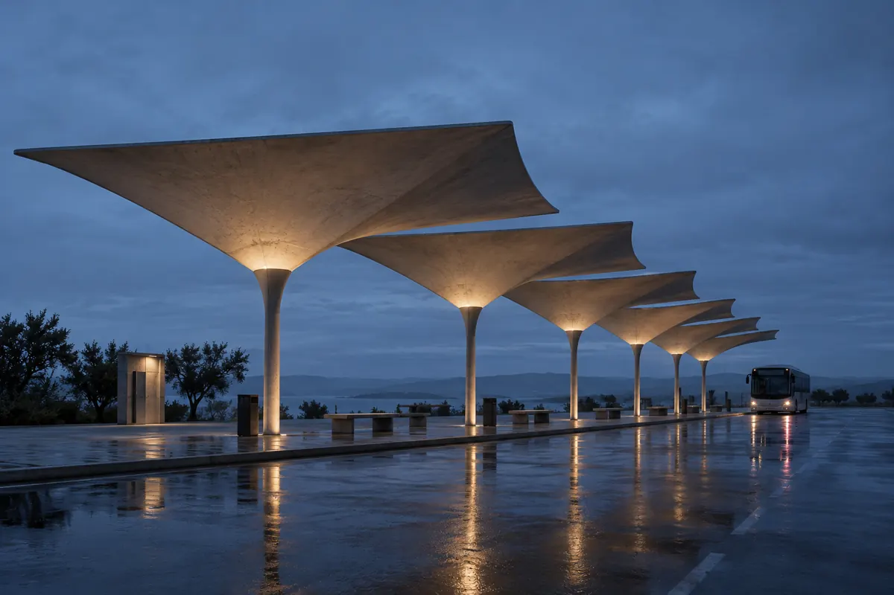
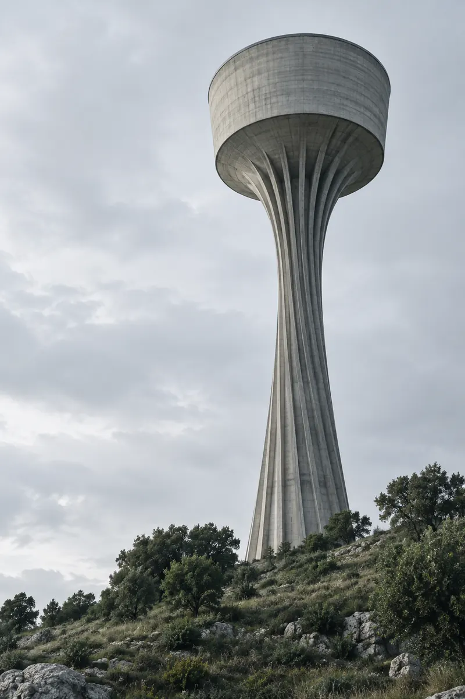
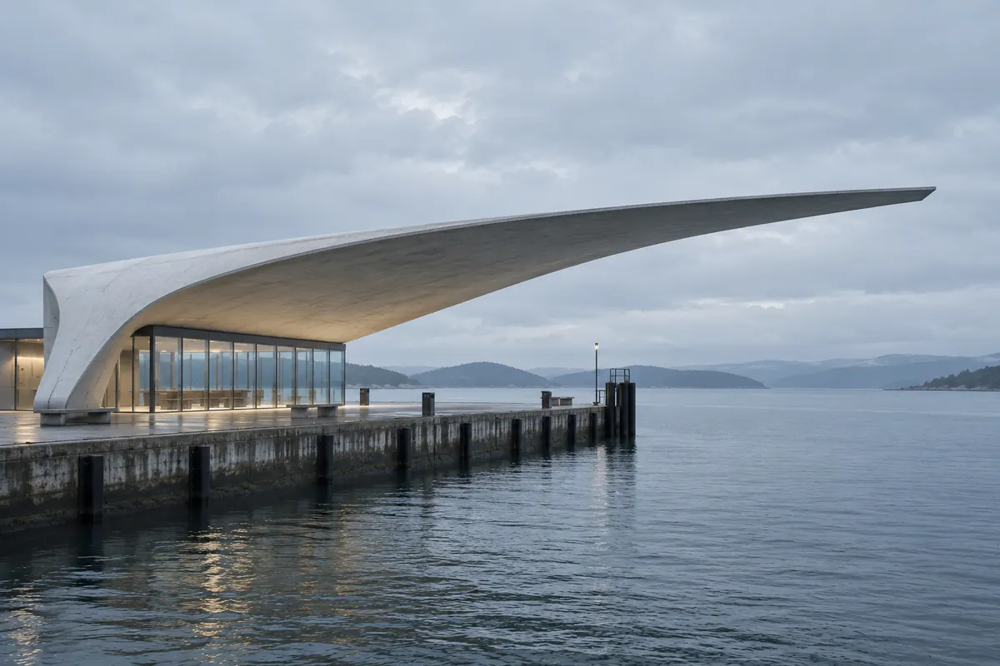
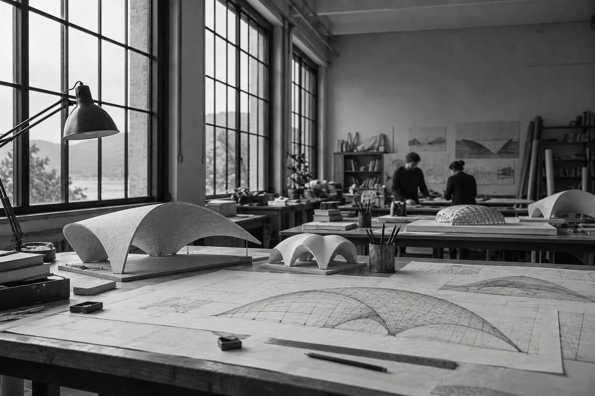

2009


© 2026
Mara Quell is an architect and engineer who builds with as little material as a structure allows: concrete shells a few centimetres thin, timber roofs that hold themselves up by their shape, and walls of earth taken from the site. The buildings are for everyday use, and they are beautiful because they are efficient, not in spite of it.
Every project starts with the structure. Find the shape that carries the load, and the rooms, the light and the budget usually follow. The studio designs and calculates every building it draws.



Eight buildings from fifteen years of practice, each with its year and the structure that carries it.
2009
2011

2013

2015

2017

2019

2021

2024

The studio is small on purpose: four architects and engineers who draw, calculate and visit the site themselves, so the idea of a building survives all the way to the last bolt.

Mara Quell trained as a civil engineer before she studied architecture. She teaches structures two days a week and writes about thin shells and low-carbon building. The studio has built in Portugal, Spain and Morocco.
“A roof that is thin because its shape carries it is cheaper, lighter and quieter than one that is thick because nobody asked the shape. We do not add beauty at the end. We find it in the calculation, or we do not find it.”
[Mara Quell, Notes on Thin Shells, 2022]
Tell us what you want to build and where. We reply within three working days, and the first conversation is free.
Most clients come with a site, a budget and a doubt about whether something unusual can be built for it. Usually it can.
We work across Portugal and Spain, and further away when a project needs a structural idea more than a local office. Fees are fixed per stage and agreed before we start drawing.